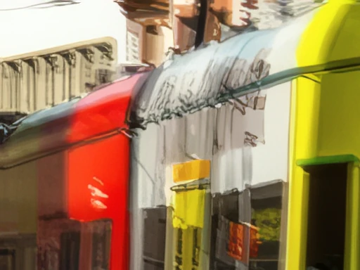
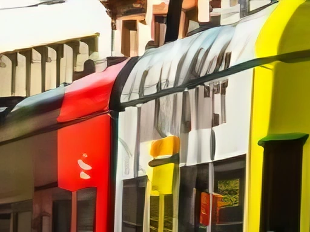
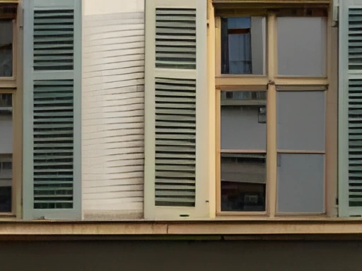
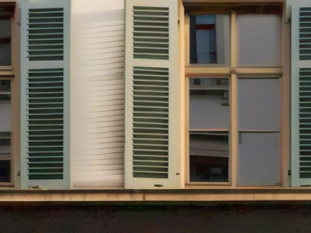
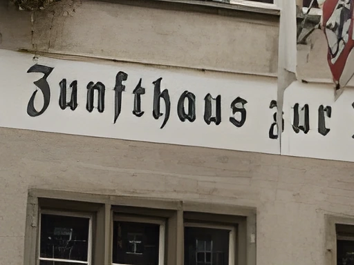
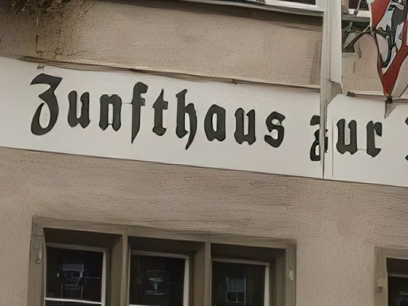
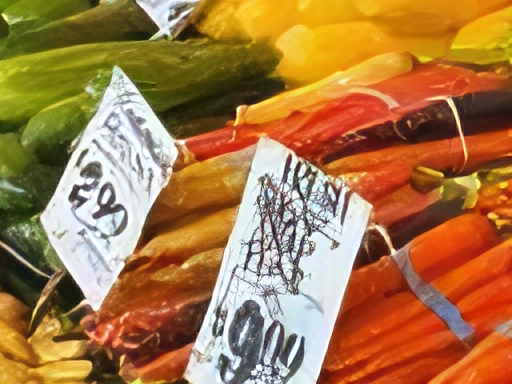

Measured 8 November 2026
Same photo.
Two upscalers.
Upscayl is the free upscaler most people know, so I wanted to see where LocalSR is really better and where it isn't. I damaged the same photos for both apps, let each one use its best model, and compared the results with the undamaged original.
Blurred photos: clearly better
Upscayl's models only enlarge, so a shaky photo gets sharpened as it is, and the blur turns into smeared, painted edges. LocalSR first removes the motion blur with NAFNet and then enlarges with its Best model. Both models come with the app.


UpscaylLocalSR
Noisy photos: better with a model from OpenModelDB
A phone at high ISO adds noise, and an upscaler that only sharpens turns it into stripes and fake texture. With 4xRealWebPhoto v4 by Philip Hofmann, a model you can load from OpenModelDB, LocalSR keeps the shutters and walls calm. With only the built-in models, Upscayl Standard is a little better here.


UpscaylLocalSR
Lettering and buildings: a little better
Both apps can read the sign. Upscayl sharpens the shutters into hard lines, while the built-in Best model stays closer to the real wood. The difference is small, but it showed up in two thirds of the test photos.


UpscaylLocalSR
Recompressed JPEGs: about the same
For a photo that was compressed twice, like a picture sent on through a messenger, the two are even. With a JPEG cleanup step first (1xDeJPG from OpenModelDB), LocalSR comes out level with Upscayl Standard. With only the built-in models, Upscayl is better here.

UpscaylLocalSR
All results
Each app used the model that did best on the first half of the test photos. The numbers come from the other half, which neither choice had seen. DISTS and LPIPS measure how close a result looks to the original.
| Photos | Upscayl | LocalSR | LocalSR closer to the original |
|---|---|---|---|
| Motion blur | High Fidelity | NAFNet, then Best (built in) | 25 of 29, clearly better |
| Sensor noise | Standard | 4xRealWebPhoto v4 (OpenModelDB) | 23 of 29, better |
| Sensor noise | Standard | Best (built in) | 7 of 29, Upscayl is better |
| Buildings, lettering | Standard | Best (built in) | 16 of 24, a little better |
| Recompressed JPEG | Standard | 1xDeJPG, then Best | 12 of 29, about the same |
| Recompressed JPEG | Standard | Best (built in) | 5 of 29, Upscayl is better |
| Clean photos | UltraMix Balanced | SwinIR (built in) | 15 of 29, about the same |
How I tested
- Upscayl 2.15.0, the newest release, with its own engine and its seven models, unchanged. LocalSR's models ran through PyTorch and spandrel, like in the app.
- 60 photos for each kind of damage: DIV2K for photos and Urban100 for buildings, cut to 1024 × 768. Each was reduced to a quarter, damaged in the same way for both apps, and enlarged 4× again, so the result can be compared with the real original.
- The damage is simulated: JPEG at quality 35 and then 55, camera-like noise, or a short motion blur. Real messenger photos and night shots differ from that.
- The best model of each app was chosen on 30 photos (36 for buildings) and measured on the other 30 (24). Upscayl had seven models to choose from, LocalSR its catalogue and a few OpenModelDB models, which the table names.
- The photos on this page are separate from the test photos. They went through the same damage and the chosen models.
Measuring is not the same as looking, so the pictures above matter as much as the numbers. Photos by Jimmy Hu, Revendo, Fabian Kleiser and Hans on Unsplash.